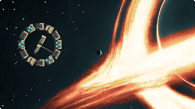

This page is open from a file, so its charts and animation cannot load their data. Run python3 -m http.server 8000 in this folder and open http://localhost:8000.

Can LLMsTell StoriesOut ofOrder?
A Corpus and Benchmark for Nonlinear Narrative Generation
The animation needs JavaScript. The caption and the two lists below give the same orders and scores.
Keys: Space plays or pauses, ← → change scene.
Redrawn from Figures 1 and 2 of the paper.Figure 1: Without a cue, the model stays near chronology (τ = +0.97); a backward cue yields exact reversal (τ = −1.00), while the published telling preserves forward scene runs (τ = −0.88). Kendall’s τ measures agreement with chronology: +1 denotes chronological order and −1 exact reversal.
Figure 2: The same events, two orders: the explanation precedes the consequence in chronology but arrives last in the telling. Opening with Roy’s death and withholding why he became the target across 16 intervening events turns a known outcome into an unresolved question.
The telling of these 18 events scores Kendall’s τ = −0.085, LIS = 0.50 and 13 hops.
Both orders as lists
No backward cue, τ = +0.97
1
2
3
4
6
5
7
8
9
10
11
12
Backward cue, τ = −1.00
12
11
10
9
8
7
6
5
4
3
2
1
Published telling, τ = −0.88
11
12
9
10
8
7
6
5
3
4
1
2
Chronology (fabula)
e1
e2
e3
e4
e5
e6
e7
e8
e9
e10
e11
e12
e13
e14
e15
e16
e17
e18
Telling (syuzhet)
e18
e6
e17
e1
e16
e2
e15
e4
e14
e3
e13
e7
e8
e9
e10
e11
e5
e12
TL;DR
Abstract
Every story has two orders: the order in which things happened and the order in which it is told. A story is nonlinear when these two orders differ. For each of 83 published works, the authors annotate one list of events in both orders, with a story graph of what causes, plants and explains what, then ask 19 language models to tell, read and write those stories out of order.
19 of 19
models tell a story more chronologically than its published telling when left alone (pooled τ 0.638 against 0.456).
47.9%
of tellings land in the human range for a requested shape, against 8.4% for random permutations.
72%vs51%
readers’ and the automated judge’s preference for the graph-guided story over the told-order one, out of decisive verdicts.
Read the abstract
Every story has two orders: the order in which things happened and the order in which it is told. A story is nonlinear when these two orders differ. We introduce a benchmark of 83 published works to measure whether language models can tell nonlinear stories. For each story, we annotate a single list of events in two orders, chronological and as narrated, along with a story graph that captures how events causally depend on one another and when each character learns key information. When events are given chronologically, all 19 models tell stories that are, on average, more chronological than human-written ones. When prompted to use a specific structure, the models’ orderings fall within the human range about half the time. We compare a model’s stories of the same events under different conditions, using both an automated judge and 71 human readers. Both prefer the chronological story a model writes by default over the nonlinear one it writes when asked, and 81% of readers also find the nonlinear version harder to follow. 72% of the readers strongly prefer graph-based stories to narrated ones, but the judge doesn’t pick up on this difference. Our results suggest that language models struggle to control narrative order, especially with complex structures.
Seven shapes
§3 · Fig. 4 · Table 5
Every work carries one of seven structural labels, which describe the order of its scenes. Each panel draws one corpus work as a story curve: told position runs across and chronological position up, so a chronological telling is the dotted diagonal. The work shown is the one nearest its category’s median in (τ, LIS), the selection Figure 4 uses.
1 / 7
Told order of the nearest-median work (18 events): 1 2 4 3 5 6 7 9 8 10 11 12 14 13 15 16 17 18
Chronicle 10 works
The telling follows chronology. The line sits on the diagonal, broken at most where two things happen at once and the telling has to pick an order for them.Montfort identifies chronological stretches of Thucydides’ The Peloponnesian War as chronicles.
Definition the models saw (§L)
“The chronological ranks run 1, 2, 3 … n in told order. Simultaneous events appearing in either order still qualify.”
T1, asked for this shape (Table 5)
band hit
0.053
model τ
0.957
human τ
0.912
agreement with gold
0.878
exact identities
0.889
Human band: τ from 0.62 to 0.97, LIS from 0.60 to 0.90. Curve: work S72, τ = +0.96.
Told order of the nearest-median work (20 events): 3 4 5 6 7 9 10 8 11 1 12 14 15 16 13 17 18 2 19 20
Analepsis 22 works
One timeline dominates, and the telling interrupts it with material from earlier, then returns to the dominant timeline. This is the flashback, and it is by a wide margin the most common nonlinear shape in the corpus.In Lost, for example, flashbacks revisit the characters’ lives before they were stranded on the island.
Definition the models saw (§L)
“One timeline dominates (it holds more than about three quarters of the scenes) and the remaining scenes are insertions from earlier than that timeline.”
T1, asked for this shape (Table 5)
band hit
0.684
model τ
0.637
human τ
0.696
agreement with gold
0.552
Human band: τ from 0.35 to 0.94, LIS from 0.50 to 0.95. Curve: work S08, τ = +0.68.
Told order of the nearest-median work (15 events): 14 1 2 3 4 5 6 7 8 9 10 11 12 13 15
Prolepsis 10 works
A mirror of analepsis where one timeline dominates and the telling interrupts it with material from later, then returns to the dominant timeline.Arrival, for example, presents episodes from a character’s future.
Definition the models saw (§L)
“One timeline dominates (it holds more than about three quarters of the scenes) and the remaining scenes are insertions from later than the dominant timeline. The inserted scene must be a real scene the reader can later place, not a vague premonition.”
The paper prints this definition with its opening cross-reference to analepsis expanded; the completed runs used the original wording (§L).
T1, asked for this shape (Table 5)
band hit
0.721
model τ
0.671
human τ
0.755
agreement with gold
0.635
Human band: τ from 0.52 to 0.93, LIS from 0.82 to 0.95. Curve: work S68, τ = +0.75.
Told order of the nearest-median work (17 events): 11 1 12 2 13 3 4 14 5 6 15 7 8 16 9 10 17
Zigzag 10 works
Two periods alternate on a regular beat, each progressing in a consistent direction, with paired scenes related by echo, explanation or contrast. The line makes a regular sawtooth.In Memento, the black-and-white scenes move forward while the color scenes move backward.
Definition the models saw (§L)
“The scenes split into two time periods that alternate on a regular beat; each period progresses in its own consistent direction; and the paired scenes are semantically related (echo, explanation, or contrast). One of the two strands may run backward.”
T1, asked for this shape (Table 5)
band hit
0.826
model τ
0.407
human τ
0.423
agreement with gold
0.396
Human band: τ from −0.09 to 0.94, LIS from 0.50 to 0.82. Curve: work S62, τ = +0.43.
Told order of the nearest-median work (17 events): 3 10 11 1 2 6 7 8 9 4 5 12 13 14 15 16 17
Syllepsis 11 works
No timeline dominates; the scenes are grouped by something other than time, such as place, character, theme or object. The line is blocky, orderly inside each block and unordered between them.The multiple plotlines of Pulp Fiction and Love Actually illustrate this grouping principle.
Definition the models saw (§L)
“There is no dominant timeline, but the scenes form blocks grouped by a nameable non-temporal principle: place, character, theme, or object. You must be able to state the principle.”
T1, asked for this shape (Table 5)
band hit
0.507
model τ
0.516
human τ
0.526
agreement with gold
0.355
Human band: τ from 0.15 to 0.80, LIS from 0.39 to 0.81. Curve: work S37, τ = +0.62.
Told order of the nearest-median work (14 events): 14 11 12 13 9 10 7 8 5 6 3 4 1 2
Retrograde 10 works
The telling runs backwards: a descending staircase, not a descending line. Scenes are told in reverse order while each scene plays forward inside itself. The pure reversal is the shape no work in the corpus has and the one models produce when instructed.The color strand of Memento offers a familiar example: successive scenes lead back to earlier events.
Definition the models saw (§L)
“The ranks run n … 3, 2, 1 throughout, and there is no present-day scene the narrative keeps returning to.”
T1, asked for this shape (Table 5)
band hit
0.011
model τ
−0.973
human τ
−0.781
agreement with gold
0.764
exact reversals
0.936
Human band: τ from −0.92 to −0.43, LIS from 0.15 to 0.36. Curve: work S54, τ = −0.82.
Told order of the nearest-median work (15 events): 1 10 14 12 13 2 3 5 4 6 7 9 8 11 15
Achrony 10 works
The corpus uses a narrower operational label than narratology: the chronology must remain reconstructable, while the telling follows no statable ordering pattern and is not merely awaiting a late reveal. The line wanders. The definition the models saw describes unrecoverable chronology, which the corpus excludes.In the broader narratological sense, achrony describes a telling whose temporal relations cannot readily be established, as in Robbe-Grillet’s La Jalousie.
Definition the models saw (§L)
“You cannot confidently assign chronological ranks because the text gives no dates, no ageing, no causal signposts, and no other ordering cues. Stop here only if the order is genuinely unrecoverable, not merely withheld until a late reveal.”
T1, asked for this shape (Table 5)
band hit
0.300
model τ
0.171
human τ
0.363
agreement with gold
0.220
Human band: τ from 0.12 to 0.62, LIS from 0.33 to 0.67. Curve: work S79, τ = +0.26.
The corpus
§3 · Table 4
Each work is reduced to 12–20 key events, written as one self-contained sentence each, so the same sentences can be read in chronological order or in the work’s telling order. A telling is then a permutation of those events, and every score is arithmetic on that permutation rather than text matching.
83
works annotated in both orders (73 nonlinear, 10 chronicles)
1,433
event nodes
1,221
scenes, contiguous in both orders
857
characters
3,478
typed edges in hand-written story graphs
657
reader-question threads
2,504
character and reader knowledge claims
0.456
mean τ of the told order
Sources
Works were selected by structural shape, beginning with films and adding novels, plays, musicals and a short story until every category had at least ten examples. The sample covers the seven shapes; it does not estimate how common they are.
Film 71
Novel 7
Play 2
Musical 2
Short story 1
The story graph
Each event is a node. A node records a subject–verb–object core, participants and location, world-state pre- and post-conditions (1,459 and 1,688), what the event teaches each character and the reader, and the questions it raises or resolves. Four edge types connect the nodes, and a machine check enforces each one’s rule:
CAUSES
1,330
runs forward in chronology
FORESHADOWS
444
runs forward in chronology
REVEALS
307
runs forward in chronology and backward in the telling, backed by a matching question pair
SHARES
1,397
undirected; must name what its endpoints share
A reveal is an event that occurs before the event it explains in chronology but appears after it in the telling. A reader question is an uncertainty raised by one narrated event and resolved by a later one. In the overview animation, e12REVEALS e18: e18 raises q1 at told position 1 and e12 resolves it at told position 18.
Graphs given to models omit the fields that state chronological and telling positions. Evaluation uses anonymized twins that replace identifying details while keeping event counts and permutations; validation rejects source proper nouns and verbatim source sentences. The checks catch inconsistency, not misreading, so each label’s rationale is released with it.
Five tasks, nineteen models
§4 · Table 1
Two tasks ask a model to produce a telling, two ask it to read one, and the fifth asks for prose. Tables label the cued and free conditions instructed and left alone.
The five tasks: input, output and score
Task
Input
Output
Scored by
T1Cued transpositioninstructed
Events in chronological order, plus a named shape and its definition
A told order (a permutation of 1 … n)
Band hit and τ
T2Free transpositionleft alone
Events in chronological order, no shape instruction
A told order (a permutation of 1 … n)
τ against chronology
T3Reconstruction
Events in the gold telling order
The underlying chronology
τ against the gold chronology, and exact match
T4Classification
Events in the gold telling order, with all seven definitions
One of the seven labels
Accuracy
T5ProseT5a cued · T5b free
Events in chronological order, with a named shape (T5a) or without one (T5b)
A 550–750-word story
Aligned back to the events, then pairwise preference by a judge and by readers
Prompts list one self-contained event sentence per line and mark neither scene boundaries nor simultaneous events. Ordering tasks decode at temperature 0 with low reasoning effort; prose decodes at 0.7. The prose and graph studies use 14 works, two per shape.
Kendall’s τ
Agreement between the telling and chronology, from +1 for chronological order to −1 for exact reversal. A telling counts as effectively chronological at τ ≥ 0.95.
LIS
The longest increasing subsequence over n: the largest share of events already told in chronological order, gaps allowed.
Band hit
Both τ and LIS fall inside the min–max range of the gold tellings for the target shape. It measures resemblance to published works, not the shape itself.
Benchmark grid
Sorted by T1 band hit. Bold: best per column (in the τ columns, closest to the human 0.456, descriptive only). open marks open-weights models. Band-hit intervals are about ±0.11, so adjacent ranks are not distinguishable. Read T3 τrec against the no-story floor (RQ2 below). Select a column heading to sort.
Table 1: benchmark grid for 19 models, with the pooled row, the human reference and the random baseline
T1 cued
T3 reconstruct
T4
T2
Gemini 3.1 Pro
0.602
0.409
0.882
0.253
0.747
0.785
Gemini 3.6 Flash
0.578
0.456
0.880
0.217
0.795
0.808
Claude Opus 5
0.566
0.416
0.886
0.193
0.614
0.615
Grok 4.5
0.566
0.398
0.877
0.205
0.699
0.485
GPT-5.6 Luna
0.550
0.413
0.815
0.129
0.486
0.664
Claude Sonnet 5
0.542
0.458
0.807
0.072
0.422
0.793
GLM-5.2open
0.542
0.472
0.868
0.193
0.602
0.708
Llama 4 Maverickopen
0.530
0.408
0.590
0.000
0.301
0.480
GPT-5.6 Sol
0.506
0.383
0.892
0.243
0.671
0.626
Nemotron 3 Ultraopen
0.494
0.484
0.409
0.060
0.506
0.562
DeepSeek V4 Proopen
0.470
0.442
0.519
0.060
0.470
0.678
GPT-5.6 Terra
0.438
0.410
0.882
0.171
0.648
0.531
Claude Haiku 4.5
0.434
0.376
0.799
0.108
0.470
0.681
gpt-oss-120bopen
0.434
0.218
0.675
0.024
0.277
0.568
Qwen3-235B-A22Bopen
0.410
0.314
0.683
0.012
0.410
0.532
Mistral Small 3.2open
0.398
0.311
0.598
0.024
0.313
0.610
DeepSeek V4 Flashopen
0.386
0.447
0.684
0.108
0.410
0.604
Kimi K2 0905open
0.361
0.421
0.761
0.060
0.422
0.760
Llama 3.3 70Bopen
0.289
0.108
0.672
0.012
0.313
0.614
pooled
0.479
0.386
0.743
0.111
0.502
0.638
[reference] human
1.000†
0.456
—
—
—
0.456
[baseline] random
0.084
0.015
—
—
0.143
0.015
Human band hit (†) is 1 by definition. Pooled is the mean over valid outputs of the 19 models (make_tables.py), so each row weighs by its valid count; the GPT-5.6 models refuse some works. The three GPT-5.6 models refuse 12.7–13.0% of attempts at the dark-literary end of the corpus.
Findings
RQ1–RQ5 · Table 3
Five research questions. Each entry gives the paper’s one-line answer, a redrawn chart and the caveat the paper attaches to it. The reader study revised RQ3 and RQ5.
RQ1ControllabilityEvery model tells a story more chronologically than its published telling; cued for a shape, band hit is 47.9%, and the two misses are the literal solutions of rules stated on events.
0.638pooled T2 τ, left alone (human 0.456)
47.9%T1 band hit when cued (random 8.4%)
93.6%of retrograde outputs are the exact reversal
88.9%of chronicle outputs are the exact identity
T1 band hit by requested shape, pooled over modelsTable view (Table 5)
Requested shape
band hit
model τ
human τ
agree gold
exact form
Zigzag
0.826
0.407
0.423
0.396
—
Prolepsis
0.721
0.671
0.755
0.635
—
Analepsis
0.684
0.637
0.696
0.552
—
Syllepsis
0.507
0.516
0.526
0.355
—
Achrony
0.300
0.171
0.363
0.220
—
Chronicle
0.053
0.957
0.912
0.878
0.889
Retrograde
0.011
−0.973
−0.781
0.764
0.936
Format is not the bottleneck: 99.5% of outputs are valid permutations. The prompts state Retrograde and Chronicle as rules over event ranks, and on events each rule has exactly one solution, the reversal or the identity; no corpus work is either. Reversing the scenes and playing each forward, which is what published reverse chronology does, hits the retrograde band for 6 of ten works. Without the two rule shapes, pooled band hit is 62.1%. The paper calls this over-compliance and reads it as a specification effect. In prose the free telling is more chronological still (τ = 0.989).
RQ2Task validityReconstruction reaches τrec = 0.743; naming the shape reaches 50.2%, with analepsis a sink.
0.743pooled T3 τrec
96.1%of that τ survives deleting the telling
42.1%of exact reconstructions survive it
50.2%T4 accuracy (chance 14.3%)
The no-story floor: three strong solvers, with and without the tellingTable view (Table 7)
Event list
Telling
τ
exact
as written
shuffled, none
0.849
0.085
as written
gold told order
0.884
0.202
de-dated
shuffled, none
0.844
0.096
de-dated
gold told order
0.878
0.181
Given the events in random order, three strong solvers reach τ = 0.849, against 0.884 with the telling, so the telling is worth +0.035 τ. Only 7 of 19 models clear that floor. Rewriting the events to remove dates cut explicit anchors from 6.3% of events to 0.7% and moved the floor by only −0.005. Exact match is the more revealing score: the telling lifts it from 8.5% to 20.2%.
T4 confusion, row-normalized and pooled over 19 modelsTable view (Figure 13)
gold ↓ / predicted →
Achrony
Analepsis
Chronicle
Prolepsis
Retrograde
Syllepsis
Zigzag
Achrony
0.07
0.46
0.04
0.10
0.00
0.24
0.09
Analepsis
0.01
0.66
0.07
0.12
0.00
0.11
0.04
Chronicle
0.01
0.13
0.64
0.01
0.00
0.15
0.06
Prolepsis
0.00
0.29
0.11
0.56
0.00
0.01
0.03
Retrograde
0.01
0.30
0.03
0.07
0.48
0.08
0.03
Syllepsis
0.00
0.33
0.05
0.03
0.01
0.49
0.09
Zigzag
0.00
0.33
0.05
0.11
0.01
0.11
0.40
Five of the six other classes send 29–46% of their items to Analepsis, so “a dominant timeline with flashbacks” is the models’ fallback. Achrony is recognized 7.1% of the time, partly because the definition the models saw describes unrecoverable chronology, which the corpus excludes. Across models, naming a shape predicts both other abilities (ρ = 0.717 with T1 band hit, 0.747 with T3 τrec), while those two barely predict each other (ρ = 0.088).
RQ3RepresentationThe graph raises compliance from 41.1% to 51.8%, almost all in one model, and readers prefer it to a supplied told order 72% of the time.revised by readers
Every condition uses the cued prose prompt (T5a), so the requested shape and its definition are always present. G0 adds nothing, G1 adds the full story graph without its position fields, and G2 supplies the gold told order and requires the story to follow it. Five ablations each remove one annotation group from G1.
The scaffolding study: band hit by conditionTable view (Table 8)
Condition
τ
band hit
agree
PDS
G0 no graph
0.362
0.411
0.554
3.85
G1 full graph
0.415
0.518
0.554
4.10
G2 told order (oracle)
0.333
0.982
0.998
3.94
− CAUSES / FORESHADOWS
0.417
0.429
0.557
4.18
− pre / post
0.440
0.464
0.557
4.14
− learns
0.399
0.464
0.561
4.05
− questions / REVEALS
0.383
0.464
0.502
3.99
− participants / location
0.409
0.500
0.526
4.04
Under the judge, G1 beats G031–14 with 11 ties (p = 0.016), but the gain disappears after adjusting for length. Against the told order the judge splits 23–22, while readers choose G1 in 72% of decisive verdicts; at the reader rate, an even outcome over 45 judgments has probability 0.0022. Claude Sonnet 5 supplies almost all of the structural gain (+0.250 band hit; Gemini 3.6 Flash −0.035; the other two none), and agreement with the gold telling does not move (0.554 to 0.554). The REVEALS edges fix only 5.5% of told-order pairs.
RQ4Cost of controlCued tellings lose to a model’s own free telling under the judge (68–19) and readers (76%), even for chronicle. As scored, the reveal comes after fewer than three events in 21.4% of stories.
Instructed against left alone: who wins the pairTable view
Instrument
instructed wins
ties
left alone wins
Judge (Gemini 3.1 Pro), 111 pairs
19
24
68
Readers
64
30
200
All 8 prose models lose to their own free telling, and the depth scale agrees more mildly (PDS 3.74 against 3.60). Readers called the instructed version harder to follow 81% of the time. Length favors the instructed texts, which are longer, so length does not explain the loss. The cued story also loses when the requested shape is Chronicle (0.32, n = 37), which asks for little reordering, so part of the penalty is the instruction itself.
Premature disclosure is suggestive. Two works inflate the early-disclosure count: one has no designated reveal and one is a chronicle whose explanation is its third event. Without them, fewer than three events precede the reveal in 8.3% of stories without a graph, 8.5% with one, and none when the model is handed the told order (p = 0.125).
RQ5Evaluation validityThe judge matches 71 readers on the one large effect, and readers overturn both of its ties (κ = −0.030 on layer removal).revised by readers
Item-level agreement between the judge and readers (Cohen’s κ, 95% CI)Table view (Table 13)
Comparison
judge
readers
Δ
item-level concordance
verdict
split
rate
split
rate
n
κ
95% CI
instructed vs. left alone
19–68
0.218
64–200
0.242
+0.024
67
+0.278
[+0.01, +0.54]
weak
full graph vs. told order
23–22
0.511
181–70
0.721
+0.210
35
+0.242
[−0.11, +0.56]
weak
full graph vs. event list
31–14
0.689
154–105
0.595
−0.094
31
+0.625
[+0.28, +0.91]
agrees
full graph vs. one layer removed
55–50
0.524
79–180
0.305
−0.219
77
−0.030
[−0.23, +0.18]
unrelated
Pooled over the four comparisons, the judge and the readers’ majority agree on 66.2% of items where both are decisive, κ = +0.306. Agreement is highest on graph against event list, the comparison with the smallest reader effect, where both may be answering the same length gap, so item-level agreement does not track effect size. The judge’s ties are not evidence of no difference: a reader tie means “about the same”, while a judge tie means its two position-swapped passes disagreed. On the depth scale, judge and reader ratings of the same 193 texts correlate at r = 0.43, but the judge rates +0.28 higher.
What readers said
§5.5 · Table 2 · Fig. 3
Readers saw the same kind of pair the judge sees: one model writing one story twice, under two conditions, with sides randomized and conditions hidden.
71
readers
3,528
blind responses
294
sittings, each with four comparisons and one close reading
14
stories, two per shape
better storyWhich is the better story overall: more engaging, better told, more satisfying to read?(the judge’s question too)
harder to followWhich was harder to follow?
better endingWhose ending tied things together better?
Reader verdicts: wins, ties and losses for the first-named condition
Rates count decisive verdicts only. adj. is the better-story rate net of word count. Every better-story result clears the Bonferroni threshold of 0.0042.
Table view (Table 2)
Comparison
better story
harder to follow
better ending
adj.
split
rate
p
split
rate
p
split
rate
p
rate
instructed vs. left alone
64–200–30
0.242against hypothesis
<0.0001
197–47–50
0.807against hypothesis
<0.0001
114–134–46
0.460
0.23
0.246survives every check
full graph vs. told order
181–70–43
0.721headline
<0.0001
115–108–71
0.516
0.69
141–106–47
0.571
0.0303
0.707survives every check
full graph vs. event list
154–105–35
0.595survives every check
0.0028
123–102–69
0.547
0.18
133–103–58
0.564
0.0588
0.518fails length adjustment
full graph vs. one layer removed
79–180–35
0.305against hypothesis
<0.0001
140–86–68
0.619against hypothesis
0.0004
110–119–65
0.480
0.60
0.304against hypothesis
Unadjusted preference rates: readers and the automated judge on the same texts
Unadjusted preference rates. Human readers favor graph-guided stories over those given a telling order or an event list; the automatic judge’s ties on two comparisons fail to capture clear reader preferences. “Layer removed” pools comparisons in which one group of graph annotations is omitted.
Table view (Figure 3)
Comparison
readers
95% interval
judge
95% interval
instructed vs. left alone
24%
19%–30%
22%
14%–31%
graph vs. told order
72%
67%–77%
51%
37%–65%
graph vs. event list
59%
54%–65%
69%
55%–81%
graph vs. layer removed
31%
25%–37%
52%
43%–62%
Do readers agree with each other?
On the better-story question, yes: Krippendorff’s α = 0.415. On the other two, barely (α = 0.112 for harder to follow, 0.073 for endings), so the endings results should be read as suggestive. One comparison per sitting silently repeated an earlier pair with sides swapped, and readers repeated their own decisive verdict 93% of the time.
Our metrics against readers
τ predicts what readers find hard. Across 918 decisive judgments, the text called harder to follow is the less chronological one by Δτ = −0.171.
Band hit does not predict what readers prefer. When exactly one text of a pair falls inside the human band, readers chose it 34% of the time (381 decisive judgments). Both results partly restate the condition effect, since the in-band text is almost always the instructed one.
What to be careful about
Table 3 · Limitations
RQ1
The reference works were chosen for nonlinearity, both free tasks list events chronologically, and no prompt marks scenes. Band hit is negatively associated with reader preference, partly through condition.
RQ2
96.1% of that τ is reachable with the story deleted (by entailment or prior knowledge of the work), and readers reach only 0.537: report the floor, prefer exact match.
RQ3
The judge saw no effect, and the two prompts differ in more than the graph. The edge over an event list is a length effect, and readers prefer every one-layer ablation to the full graph.
RQ4
Two scoring cases inflate the early rate (8.3% without them). Retrospective coherence gain is capped near 0.12 by the same floor.
RQ5
Item-level agreement does not track effect size; fourteen stories, two generators in the layer-removal study, no comparison against human-written prose.
The paper’s Limitations section also covers: one judge still does all the prose-to-event alignment; the length confound is diagnosed, not removed; the reader cohort is not a probability sample; input order is a confound for the free tasks; band hit measures resemblance, not quality; the layer-removal result rests on two generators that disagree; and anonymization reduces contamination without eliminating it.
Cite
BibTeX
@misc{raiyan2026nonlinearnarrative,
title={Can LLMs Tell Stories Out of Order? A Corpus and Benchmark for Nonlinear Narrative Generation},
author={Syed Rifat Raiyan and Md. Tariquzzaman and Md Farhan Ishmam and Tenghao Huang},
year={2026},
eprint={2610.21468},
archivePrefix={arXiv},
primaryClass={cs.CL},
url={https://arxiv.org/abs/2610.21468},
}
“Despite knowing the journey and where it leads, I embrace it. And I welcome every moment of it.”